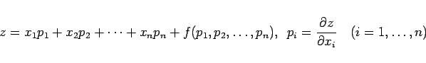
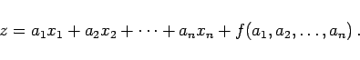
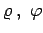

Inhalt Index DeskTop Bronstein

 Differentialgleichungen Partielle Differentialgleichungen Partielle Differentialgleichungen 1. Ordnung Nichtlineare partielle Differentialgleichungen 1. Ordnung
Differentialgleichungen Partielle Differentialgleichungen Partielle Differentialgleichungen 1. Ordnung Nichtlineare partielle Differentialgleichungen 1. Ordnung


Wenn die gegebene Differentialgleichung auf die Form
|  | (9.75a) |
gebracht werden kann, man spricht dann von CLAIRAUTscher Differentialgleichung, gestaltet sich die Bestimmung des vollständigen Integrals recht einfach, denn ein vollständiges Integral mit den frei wählbaren Parametern  ist
ist
|  | (9.75b) |
| Beispiel Zweikörperproblem mit Hamilton--Funktion | ||||||||
|
Die Bewegung zweier materieller Punkte, die der NEWTONschen Gravitationswechselwirkung unterliegen sollen, erfolgt in einer Ebene. Daher ist es vorteilhaft, einen der beiden Punkte in den Koordinatenursprung zu legen, so daß die Bewegungsgleichung die Form annimmt. Führt man die HAMILTON-Funktion
ein, dann geht das System (9.76a) in das Normalsystem mit
über. Die Differentialgleichung lautet nunmehr Bei Einführung von Polarkoordinaten  geht (9.76e) in eine neue Differentialgleichung über, deren Lösung in der Form
mit den Parametern a, b, c dargestellt werden kann. Die allgemeine Lösung des Systems (9.76c) ergibt sich aus den Gleichungen
|